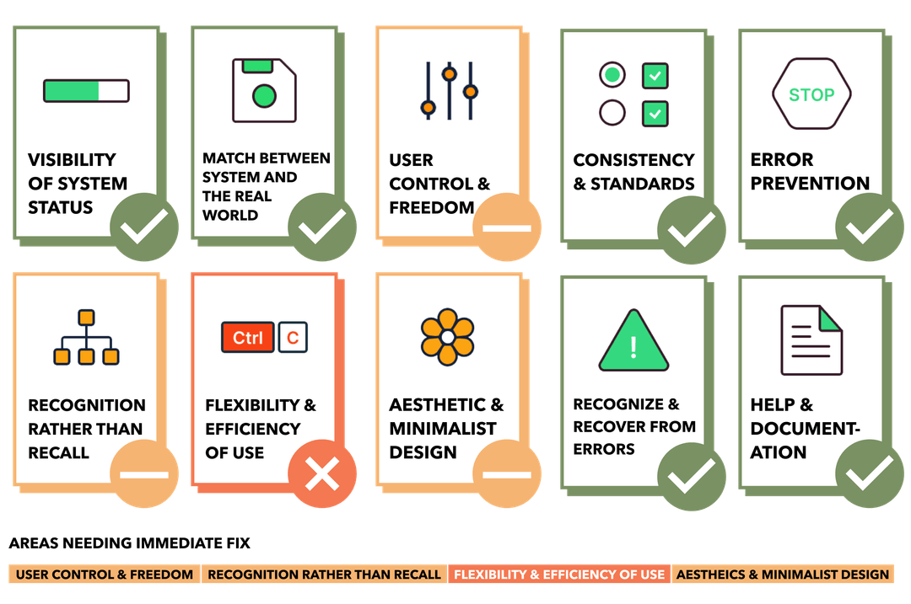
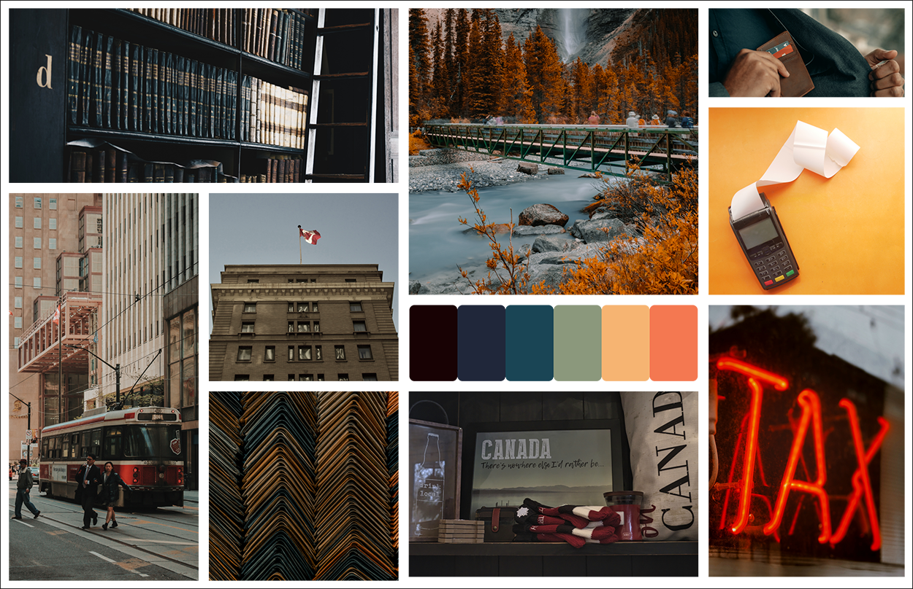
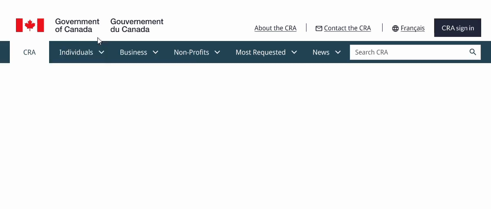

Canada Revenue Agency Website Redesign
The CRA website was historically marked by navigation difficulties and outdated aesthetics, causing users to experience frustration and potentially leading to non-compliance issues. Recognizing these challenges, I embarked on a comprehensive redesign. The new design prioritizes intuitive categorization, clear labels, and streamlined user paths, aiming to significantly enhance the overall user experience and ensure clear resource accessibility.
This is a project for UofT SCS UX/UI Design bootcamp.
Team
Individual
Duration
5 Weeks
Role
UX Researcher, Web Designer
Time
Aug 14 2023 ~ Sept 18 2023
Not interested in my design process?
That's perfectly okay!
Teleport to the Final Product
Background
The Canada Revenue Agency (CRA) administers tax laws, delivers social and economic benefits, and ensures compliance for Canadian governments. It plays a crucial role in managing the country's financial infrastructure and serves both individuals and businesses.
The Problem
While CRA's role is crucial, its website has historically faced challenges that could hinder its efficacy. The primary issues identified were:
- Difficulties in navigation that led to user frustration, potentially causing non-compliance due to a lack of clarity.
- A need for a user interface redesign with intuitive categorization, clear labels, and improved user-path optimization.
- Refining the aesthetic appeal of the site to make it more user-friendly, approachable, and modernized.
User Research
To prepare for usability testing, I created a proto persona and user path analysis to define objectives for Guerrilla usability testing.
Five participants tested the login process and the navigation for downloading tax forms. Feedback revealed that while most could log in and find the T2125 form, website navigation was challenging, highlighting the need for a more user-friendly homepage and improved content organization.

Proto Persona
User Path Analysis
Usability Testing
Affinity Diagram
Following the initial research phase, a heuristic evaluation was performed on five specific web pages of the CRA website. This assessment aimed to pinpoint and emphasize areas that necessitated immediate enhancements and rectification.
Moodboard
A moodboard is a curated collection of visuals, colors, and design elements that define a project's aesthetic. For the CRA website redesign, it established a cohesive visual direction and aligned design choices with the intended user experience and branding.
Information Architecture
During the Information Architecture stage, an in-depth navigation analysis was conducted to optimize the CRA website. Identifying inefficiencies, a card sorting exercise reorganized all pages into new primary and secondary categories, ensuring intuitive navigation. Insights from this exercise led to the development of a comprehensive sitemap.
Navigation Analysis
Card Sorting
Sitemap
Based on the refined sitemap, a prototype for the navigation and footer was then crafted.
